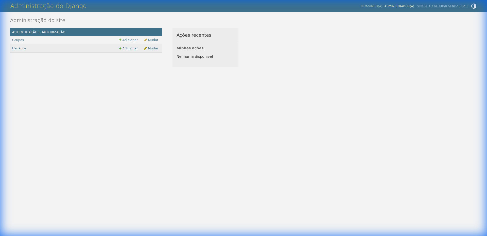
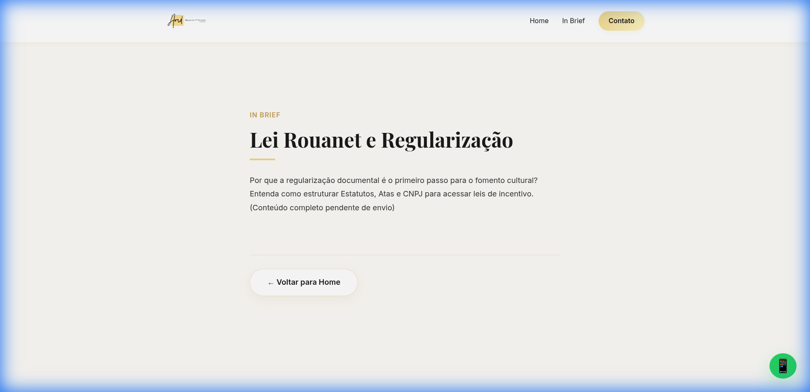

1. Administração Unificada
Toda a gestão do escritório foi consolidada em um único portal administrativo simplificado, eliminando a
necessidade de acessar o painel padrão do Django. O acesso é feito via /portal-admin/.
Destaque: Você gerencia conteúdo, clientes e configurações no mesmo lugar.

2. Dashboard e Métricas
O novo Dashboard apresenta uma visão 360º da operação:
- Leads: Acompanhamento diário e mensal de novos interessados.
- Operação: Status de casos ativos e valor em contingência.
- Conteúdo: Quantidade de artigos publicados e categorias ativas.
- Financeiro: Resumo de contas a pagar, receber e atrasos.

3. Gestão de Conteúdo (WP-Style)
O sistema "In Brief" agora permite gestão completa de posts e categorias:
- Artigos: Crie, edite e publique textos diretamente pelo portal.
- Categorias: Organize seus textos por áreas do direito ou temas de interesse.
Acesse Artigos ou Categorias na barra lateral para gerenciar o blog.

4. Configurações do Sistema
A página de Configurações deixou de ser apenas visual e agora é funcional:
- Integrações: Ative ou desative o WhatsApp e outras ferramentas com um clique.
- Identidade: Altere o nome de exibição do escritório na plataforma.
- Automações: Controle se o cliente recebe notificações automáticas por WhatsApp.
As alterações feitas nesta página impactam diretamente o comportamento dos robôs e das integrações.